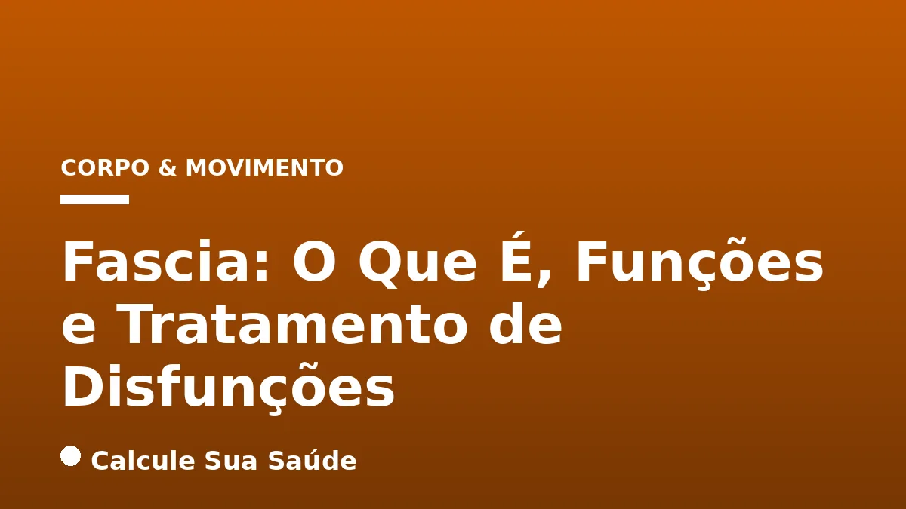

Aviso médico importante
Este conteúdo é educativo e informativo e não substitui a consulta, o diagnóstico ou o tratamento de um profissional de saúde. Em caso de sintomas, procure orientação médica.
Índice do Artigo
- 1. O Que é a Fáscia? Uma Rede Viva e Dinâmica
- 2. Tipos de Fáscia: Uma Camada por Camada
- 3. Funções Essenciais da Rede Fascial
- 4. Quando a Rede Falha: Causas de Disfunções Fasciais
- 5. Fascite Plantar: Dor na Sola do Pé
- 6. Síndrome da Dor Miofascial (SDM): Pontos-Gatilho e Dor Referida
- 7. A Importância da Hidratação e Mobilidade Fascial
- 8. Tratamento da Fascite Plantar: Alívio e Recuperação
- 9. Tratamento da Síndrome da Dor Miofascial (SDM)
- 10. Mitos Comuns vs. Realidade Científica sobre a Fáscia
- 11. Dados Epidemiológicos no Brasil
- 12. Prevenção: Mantendo a Fáscia Saudável
- 13. O Papel da Fisioterapia e Terapias Manuais
- 14. Perguntas frequentes
Por muito tempo relegada a um papel secundário, a fáscia tem emergido como um protagonista na compreensão da biomecânica e da saúde humana. Longe de ser um mero envoltório inerte, este tecido conjuntivo fibroso e elástico forma uma intrincada rede tridimensional que permeia todo o nosso organismo, conectando e sustentando músculos, ossos, órgãos, nervos e vasos sanguíneos. Sua influência se estende desde a transmissão de força muscular até a nossa percepção corporal, desempenhando um papel crucial na mobilidade, estabilidade e prevenção de dores.
Compreender a fáscia é desvendar um dos segredos da integridade estrutural e funcional do corpo. Quando essa rede complexa e dinâmica sofre alterações, seja por lesões, sobrecarga ou imobilidade, podem surgir uma série de disfunções, manifestando-se frequentemente como dores musculoesqueléticas crônicas. Este artigo aprofundado visa explorar a natureza multifacetada da fáscia, suas funções vitais, as causas e sintomas de suas disfunções mais comuns, e, fundamentalmente, os tratamentos com respaldo científico para restaurar sua saúde e a qualidade de vida.
Em resumo
- A fáscia é uma rede contínua de tecido conjuntivo que envolve e conecta todas as estruturas do corpo.
- Suas funções incluem transmissão de força, facilitação do deslizamento muscular, estabilidade e propriocepção.
- Disfunções fasciais, como aderências e densificação, podem causar dor crônica e limitação de movimento.
- Fascite plantar e síndrome da dor miofascial são exemplos comuns de condições relacionadas à fáscia.
- O tratamento eficaz foca em abordagens conservadoras, fisioterapia, exercícios e, em alguns casos, intervenções específicas.
- Mitos sobre a fáscia, como 'descolamento' mecânico, são desmistificados pela ciência, que aponta para efeitos neurofisiológicos.
1. O Que é a Fáscia? Uma Rede Viva e Dinâmica
A fáscia é um tecido conjuntivo fibroso, elástico e altamente organizado, que se estende por todo o corpo em uma rede tridimensional contínua. Pense nela como uma teia de aranha microscópica que envolve cada fibra muscular, cada feixe nervoso, cada vaso sanguíneo e até mesmo cada órgão. Essa estrutura não é estática; ela é dinâmica e responsiva, adaptando-se a diferentes cargas e movimentos. Composta principalmente por células (fibroblastos), fibras de colágeno (para força) e elastina (para elasticidade), além de uma substância fundamental gelatinosa rica em água e proteoglicanos, a fáscia é um tecido vivo, metabolicamente ativo e crucial para a saúde geral.
Historicamente, a fáscia era vista apenas como um tecido de preenchimento ou um invólucro passivo. No entanto, pesquisas recentes a redefiniram como um sistema sensorial e de comunicação integrado. Sua capacidade de se modificar sob estresse e aumentar a elasticidade sob tensão a torna um componente vital na adaptação do corpo a desafios físicos. A qualidade e a integridade da fáscia impactam diretamente nossa capacidade de nos movermos com eficiência, gerarmos força e mantermos o equilíbrio, sendo um elemento central na propriocepção – a consciência da posição do nosso corpo no espaço.
2. Tipos de Fáscia: Uma Camada por Camada
A fáscia não é uma entidade única, mas sim um sistema interconectado com diferentes características e localizações:
- Fáscia Superficial: Localizada logo abaixo da pele, é uma camada mais solta e adiposa que conecta a pele aos tecidos mais profundos. Ela desempenha um papel importante na propriocepção, na termorregulação, na circulação e na mobilidade da pele sobre as estruturas subjacentes.
- Fáscia Profunda: Esta é a camada mais densa e resistente, que envolve e separa músculos, tendões, nervos e vasos sanguíneos. Ela fornece suporte estrutural, organiza os tecidos para otimizar o movimento e permite o deslizamento suave entre as diferentes estruturas musculares e aponeuróticas. É a fáscia profunda que frequentemente está envolvida em condições de dor e rigidez.
- Fáscia Visceral: Um tipo especializado de fáscia que reveste e sustenta os órgãos internos, mantendo-os em suas cavidades e permitindo que se movam livremente durante as funções corporais (como a respiração ou a digestão).
- Fáscia do Sistema Nervoso: Inclui as meninges, que protegem o cérebro e a medula espinhal, e outras bainhas que envolvem os nervos periféricos, garantindo sua proteção e condução de impulsos.
3. Funções Essenciais da Rede Fascial
A rede fascial desempenha um papel multifacetado e indispensável para o funcionamento do corpo:
- Transmissão de Força Miofascial: A fáscia atua como um sistema de transmissão, distribuindo a tensão gerada pela contração muscular para outras partes do corpo. Isso otimiza a eficiência do movimento, permitindo que a força gerada em um grupo muscular seja transferida de forma coordenada para outros, como em um sistema de cabos interligados.
- Facilitação do Deslizamento Muscular: Camadas fasciais saudáveis e bem hidratadas, lubrificadas por substâncias como o ácido hialurônico, permitem que músculos e outros tecidos adjacentes deslizem uns sobre os outros sem atrito. Essa mobilidade é fundamental para a amplitude de movimento e para evitar restrições.
- Estabilidade e Rigidez: A qualidade da fáscia influencia a sensação de rigidez muscular e a capacidade de gerar força de forma estável. Uma fáscia íntegra contribui para a postura e a estabilidade articular.
- Propriocepção e Sensibilidade: A fáscia é ricamente inervada, contendo uma vasta quantidade de receptores sensoriais (mecanorreceptores e nociceptores). Essa densidade neural a torna um órgão sensorial primário, essencial para a consciência corporal, o equilíbrio, a coordenação motora e a percepção da dor. Estudos indicam que a fáscia pode conter até seis vezes mais terminações nervosas do que os próprios músculos.
4. Quando a Rede Falha: Causas de Disfunções Fasciais
A integridade da fáscia pode ser comprometida por uma variedade de fatores, levando a disfunções que se manifestam como dor e restrição de movimento. As causas mais comuns incluem:
- Lesões e Traumas: Impactos diretos, entorses ou distensões podem causar microlesões ou rupturas nas fibras fasciais, levando à formação de cicatrizes e aderências.
- Sobrecarga Repetitiva: Movimentos repetitivos, posturas inadequadas mantidas por longos períodos ou atividades físicas intensas sem o devido descanso podem sobrecarregar a fáscia, levando à sua densificação e perda de elasticidade.
- Imobilização Prolongada: Períodos de inatividade, como após uma cirurgia ou fratura, ou devido a um estilo de vida sedentário, podem fazer com que a fáscia perca sua hidratação e flexibilidade, tornando-se mais rígida e propensa a aderências.
- Desidratação: A substância fundamental da fáscia é rica em água. A desidratação crônica pode afetar a fluidez e a capacidade de deslizamento das camadas fasciais.
- Processos Inflamatórios e Degenerativos: Condições inflamatórias ou degenerativas podem afetar a saúde e a estrutura da fáscia.
Esses fatores podem levar à densificação do tecido fascial, à formação de aderências entre as camadas (prejudicando o deslizamento), à sensibilização dos receptores neurais presentes na fáscia e à redução da eficiência na transmissão de força. O resultado comum é a dor musculoesquelética crônica, muitas vezes de difícil diagnóstico e tratamento.
5. Fascite Plantar: Dor na Sola do Pé
A fascite plantar é uma das causas mais comuns de dor no calcanhar, afetando milhões de pessoas anualmente. Embora o termo 'fascite' sugira inflamação, a condição é frequentemente caracterizada por alterações degenerativas na fáscia plantar, um tecido fibroelástico espesso que se estende do osso do calcanhar (calcâneo) até a base dos dedos, fornecendo suporte ao arco do pé.
Causas e Fatores de Risco
O desenvolvimento da fascite plantar geralmente ocorre devido ao estresse excessivo e repetitivo sobre a fáscia plantar, levando a microlesões que o corpo tem dificuldade em reparar. Os fatores que aumentam o risco incluem:
- Encurtamento da Cadeia Posterior: Músculos da panturrilha e o tendão de Aquiles encurtados restringem o movimento do tornozelo e aumentam a tensão na fáscia plantar.
- Calçados Inadequados: Uso frequente de saltos altos, sapatos com solado reto e sem suporte adequado para o arco do pé.
- Excesso de Peso: A obesidade ou o sobrepeso aumentam a carga sobre a fáscia plantar.
- Atividades de Alto Impacto: Correr, dançar, saltar ou esportes que exigem impacto repetitivo nos pés.
- Longos Períodos em Pé: Profissões que demandam ficar em pé por muitas horas.
- Alterações Biomecânicas: Pés planos (chato), pés cavos ou pronação excessiva (o pé rola para dentro ao caminhar).
- Mudanças na Rotina: Aumento súbito na intensidade ou duração de atividades físicas.
Sintomas Característicos
A dor é o sintoma predominante, tipicamente descrita como:
- Uma pontada ou queimação na parte inferior do calcanhar, muitas vezes na região central.
- Dor aguda ao dar os primeiros passos pela manhã ou após um período de repouso.
- A dor pode diminuir com o movimento inicial, mas retornar após atividades prolongadas.
- Sensibilidade ao toque na área afetada.
- Rigidez na sola do pé.
Em alguns casos, pode haver inchaço ou vermelhidão, mas estes são menos comuns. O diagnóstico é primariamente clínico, baseado na história do paciente e no exame físico. Exames de imagem como radiografias, ultrassonografia ou ressonância magnética podem ser usados para descartar outras condições ou avaliar a gravidade da alteração fascial.
6. Síndrome da Dor Miofascial (SDM): Pontos-Gatilho e Dor Referida
A Síndrome da Dor Miofascial (SDM) é uma condição crônica que afeta músculos e suas fáscias envolventes, caracterizada pela presença de pontos hipersensíveis conhecidos como pontos-gatilho (trigger points - TrPs). Estes pontos, localizados em 'bandas' tensas no músculo, são extremamente sensíveis à pressão e podem desencadear dor local ou irradiada para outras áreas do corpo, um fenômeno chamado dor referida.
Causas e Fatores de Risco
As causas exatas da SDM ainda são objeto de estudo, mas acredita-se que estejam ligadas a estresse excessivo ou lesões musculares repetitivas. Fatores que contribuem para o seu desenvolvimento incluem:
- Uso Excessivo e Movimentos Repetitivos: Atividades que sobrecarregam determinados grupos musculares de forma contínua.
- Má Postura e Fraqueza Muscular: Desequilíbrios biomecânicos que levam a uma tensão muscular crônica.
- Estresse Emocional e Psicológico: Ansiedade, depressão e estresse crônico podem aumentar o tônus muscular e a sensibilidade à dor.
- Traumas Musculares: Lesões agudas que afetam o músculo e sua fáscia.
- Distúrbios do Sono: Sono não reparador pode exacerbar a fadiga muscular e a percepção da dor.
- Fatores Metabólicos e Nutricionais: Deficiências de vitaminas ou minerais, hipotireoidismo ou hipoglicemia podem influenciar a saúde muscular.
Sintomas da SDM
Os sintomas da SDM podem variar amplamente, mas geralmente incluem:
- Dor muscular profunda, constante, em peso ou em queimação, que pode ser difícil de localizar.
- Sensibilidade extrema ao toque em pontos específicos (pontos-gatilho).
- Dor referida para outras partes do corpo, seguindo padrões característicos para cada músculo.
- Rigidez muscular e limitação de movimento.
- Dificuldade para dormir devido à dor persistente.
- Fadiga e sensação de mal-estar geral.
O diagnóstico é eminentemente clínico, baseado na identificação de bandas tensas e pontos-gatilho pelo médico ou fisioterapeuta. Exames de imagem não são eficazes para detectar pontos-gatilho, mas podem ser úteis para excluir outras condições.
7. A Importância da Hidratação e Mobilidade Fascial
A fáscia, em seu estado saudável, é um tecido hidatado e flexível, permitindo o deslizamento suave entre suas camadas e com as estruturas adjacentes. A substância fundamental, rica em ácido hialurônico, confere essa viscosidade e capacidade de lubrificação essenciais. Quando a hidratação é inadequada ou a mobilidade é restrita, a fáscia pode se tornar mais densa, rígida e propensa a aderências.
Manter uma boa hidratação, bebendo água suficiente ao longo do dia, é um passo fundamental para a saúde fascial. Além disso, a mobilidade é um estímulo vital. O movimento regular, especialmente aquele que envolve amplitudes de movimento completas e variadas, ajuda a 'lubrificar' as camadas fasciais, a manter a elasticidade das fibras de colágeno e elastina, e a prevenir a formação de aderências. Atividades como alongamento, yoga, Pilates e exercícios de mobilidade são particularmente benéficas para manter a fáscia em bom estado de funcionamento.
8. Tratamento da Fascite Plantar: Alívio e Recuperação
A boa notícia é que a maioria dos casos de fascite plantar responde bem a tratamentos conservadores, com mais de 90% dos pacientes apresentando melhora significativa sem necessidade de cirurgia. O manejo foca em reduzir a carga sobre a fáscia, aliviar a dor e promover a cicatrização.
Abordagens Conservadoras Essenciais:
- Repouso e Modificação de Atividades: Reduzir ou suspender temporariamente atividades que agravem a dor, como corrida ou longos períodos em pé.
- Aplicação de Gelo: Compressas frias na área afetada por 15-20 minutos, várias vezes ao dia, podem ajudar a reduzir a inflamação e a dor.
- Medicamentos: Analgésicos e anti-inflamatórios não esteroides (AINEs), como ibuprofeno ou naproxeno, podem ser prescritos por um médico para alívio sintomático.
- Fisioterapia: É um pilar do tratamento. Inclui exercícios de alongamento específicos para a fáscia plantar e a cadeia posterior (panturrilha e tendão de Aquiles), fortalecimento dos músculos intrínsecos do pé e técnicas de liberação miofascial.
- Calçados e Palmilhas: Utilizar sapatos com bom amortecimento e suporte para o arco. Palmilhas ortopédicas personalizadas ou pré-fabricadas podem ser muito eficazes para redistribuir a pressão e dar suporte ao arco.
- Órteses Noturnas: Dispositivos usados durante o sono para manter a fáscia plantar e o tendão de Aquiles em uma posição alongada, reduzindo a dor matinal.
- Controle de Peso: A perda de peso é crucial para reduzir a carga sobre os pés em indivíduos com sobrepeso ou obesidade.
Tratamentos Adjuvantes e Cirurgia:
Em casos mais resistentes, podem ser consideradas terapias como ultrassom terapêutico, terapia por ondas de choque extracorpórea (TOCE) ou injeções de corticosteroides (com cautela devido a riscos) ou plasma rico em plaquetas (PRP). A cirurgia (fasciotomia plantar) é raramente necessária e reservada para casos crônicos e refratários que não respondem a mais de 6-12 meses de tratamento conservador.
9. Tratamento da Síndrome da Dor Miofascial (SDM)
O tratamento da SDM é frequentemente multidisciplinar e visa não apenas aliviar a dor, mas também identificar e corrigir os fatores contribuintes. A abordagem é individualizada, focando em restaurar a função muscular e melhorar a qualidade de vida do paciente.
Componentes do Tratamento:
- Fisioterapia: É a base do tratamento. Inclui técnicas de alongamento suave e progressivo, massagem terapêutica, liberação miofascial, aplicação de calor ou gelo, eletroterapia (como TENS), e exercícios de fortalecimento e controle motor para restaurar a função muscular e a postura.
- Técnicas de Inativação de Pontos-Gatilho: Podem incluir compressão isquêmica, spray e alongamento, ou injeções nos pontos-gatilho com anestésicos locais, corticosteroides ou toxina botulínica. A injeção com agulha seca (dry needling) também é uma técnica comum.
- Medicamentos: Analgésicos, relaxantes musculares e, em alguns casos, antidepressivos tricíclicos ou inibidores da recaptação de serotonina e noradrenalina (IRSNs) podem ser prescritos para ajudar no controle da dor e melhorar o sono.
- Terapia de Relaxamento e Gerenciamento do Estresse: Técnicas como meditação, mindfulness, yoga e biofeedback podem ser úteis para reduzir a tensão muscular associada ao estresse emocional.
- Correção Ergonômica: Ajustes no ambiente de trabalho ou em atividades diárias para reduzir a sobrecarga muscular e postural.
- Tratamento de Comorbidades: Abordar condições associadas como distúrbios do sono, ansiedade, depressão, deficiências nutricionais ou doenças reumatológicas.
- Acupuntura: Algumas evidências sugerem que a acupuntura pode ser um coadjuvante útil no manejo da dor miofascial.
É fundamental que o tratamento seja conduzido por profissionais de saúde qualificados, como médicos fisiatras, reumatologistas ou fisioterapeutas especializados.
10. Mitos Comuns vs. Realidade Científica sobre a Fáscia
A popularização do conceito de fáscia na indústria do fitness e bem-estar levou à disseminação de alguns mitos e simplificações exageradas. É importante separar o que a ciência robusta nos diz do que é mera especulação ou marketing.
Mitos Desmistificados:
- Mito 1: 'Restrições fasciais deslocam todo o corpo.'
Ciência: Embora aderências ou fibroses em uma área possam alterar padrões de movimento localmente e influenciar a mecânica corporal, a ideia de que uma restrição fascial possa 'desalinhar' o esqueleto inteiro é uma simplificação excessiva. Mudanças estruturais significativas que afetam o alinhamento global geralmente resultam de traumas graves, doenças sistêmicas ou condições congênitas, não de tensões fasciais isoladas. - Mito 2: 'Pontos-gatilho são apenas fáscia desidratada.'
Ciência: A fáscia saudável depende da hidratação e da mobilidade para sua elasticidade. No entanto, pontos-gatilho são fenômenos mais complexos. Eles envolvem a hiperatividade de unidades motoras e a sensibilização de nociceptores (receptores de dor) em nível neural e muscular, não sendo meramente um problema de 'desidratação' do tecido conjuntivo. - Mito 3: 'Técnicas manuais podem 'liberar', 'romper' ou 'descolar' a fáscia mecanicamente.'
Ciência: Estudos biomecânicos indicam que seriam necessárias forças imensas (centenas de quilogramas) para causar deformações significativas na fáscia, muito além do que técnicas manuais podem aplicar ou que o corpo humano toleraria. O alívio proporcionado por terapias como a liberação miofascial é, em grande parte, neurofisiológico. O toque, a pressão e o alongamento estimulam mecanorreceptores e modulam a atividade neural, reduzindo a percepção da dor, diminuindo o tônus muscular excessivo e melhorando a propriocepção. Não se trata de 'quebrar' o tecido, mas de influenciar a forma como o sistema nervoso interpreta e responde à dor e ao movimento.
11. Dados Epidemiológicos no Brasil
A prevalência de disfunções relacionadas à fáscia no Brasil reflete tendências globais, com particularidades demográficas.
Fascite Plantar:
- É uma das causas mais frequentes de dor no calcanhar, afetando uma parcela significativa da população. Estimativas globais sugerem que cerca de 10% das pessoas experimentarão fascite plantar em algum momento da vida.
- No Brasil, estudos observacionais indicam que a condição pode ser mais prevalente em mulheres, especialmente entre 20-40 anos e na faixa etária do climatério (40-60 anos), frequentemente associada ao sobrepeso ou sedentarismo.
- Em homens, a fascite plantar é mais comum em praticantes de atividades físicas, como corredores, onde o estresse repetitivo nos pés é um fator chave.
- Geralmente, a fascite plantar é unilateral, afetando um pé de cada vez, embora possa ocorrer bilateralmente em alguns casos.
Síndrome da Dor Miofascial (SDM):
- A SDM é considerada uma causa comum de dor musculoesquelética crônica em todo o mundo. A Organização Mundial da Saúde (OMS) estima que cerca de 30% da população global sofra de dor crônica, e a SDM é uma das manifestações frequentes.
- A prevalência em diferentes populações varia, mas há uma tendência a ser mais comum em mulheres e em indivíduos de meia-idade. No entanto, pode afetar pessoas de todas as idades e gêneros. Indivíduos com hábitos sedentários ou que realizam trabalhos fisicamente exigentes também podem ter maior risco.
É importante notar que estes dados são baseados em estudos específicos e podem variar dependendo da metodologia e da população estudada. A conscientização sobre essas condições e a busca por avaliação médica são fundamentais para o diagnóstico e tratamento adequados.
12. Prevenção: Mantendo a Fáscia Saudável
A prevenção de disfunções fasciais envolve a adoção de hábitos que promovam a saúde e a resiliência deste tecido. Ao cuidar da fáscia, podemos reduzir significativamente o risco de desenvolver dores crônicas e limitações de movimento.
Estratégias de Prevenção:
- Hidratação Adequada: Consumir uma quantidade suficiente de água ao longo do dia é essencial para manter a substância fundamental da fáscia fluida e elástica.
- Movimento Regular e Variado: Incorporar atividades físicas que promovam a amplitude de movimento, como alongamento, yoga, Pilates, dança ou exercícios de mobilidade. Evitar a imobilidade prolongada.
- Fortalecimento Muscular Equilibrado: Manter um programa de treinamento de força que trabalhe os músculos de forma equilibrada, prevenindo desequilíbrios que possam sobrecarregar a fáscia. Um bom exemplo é o alongamento e mobilidade.
- Postura Correta: Estar atento à postura no dia a dia, tanto em repouso quanto durante atividades, para evitar tensões crônicas.
- Calçados Adequados: Utilizar sapatos confortáveis, com bom suporte e amortecimento, especialmente durante atividades físicas ou longos períodos em pé. Evitar o uso excessivo de saltos altos ou calçados muito restritivos.
- Gerenciamento do Peso Corporal: Manter um peso saudável reduz a carga excessiva sobre as estruturas de suporte do corpo, incluindo a fáscia plantar.
- Técnicas de Relaxamento: Gerenciar o estresse emocional e psicológico, pois ele pode levar ao aumento do tônus muscular e à sensibilidade à dor.
- Técnicas de Autoliberação Miofascial: O uso de rolos de espuma (foam rollers) ou bolas de massagem, sob orientação profissional, pode ajudar a manter a fáscia flexível e aliviar tensões.
Adotar essas práticas de forma consistente contribui para a manutenção de uma fáscia saudável, permitindo que o corpo funcione de maneira mais eficiente e com menor risco de dor.
13. O Papel da Fisioterapia e Terapias Manuais
A fisioterapia e diversas terapias manuais desempenham um papel central no tratamento e na reabilitação de disfunções fasciais. Profissionais qualificados utilizam uma gama de técnicas para restaurar a mobilidade, aliviar a dor e melhorar a função.
Técnicas Comuns na Fisioterapia:
- Liberação Miofascial: Esta técnica manual envolve a aplicação de pressão suave e sustentada em pontos de restrição fascial para liberar tensões e aderências. Contrariando alguns mitos, o objetivo não é 'romper' o tecido, mas sim influenciar a resposta neurofisiológica e promover o relaxamento muscular.
- Alongamento Terapêutico: Exercícios de alongamento específicos e progressivos são fundamentais para restaurar o comprimento e a elasticidade da fáscia e dos músculos associados.
- Massagem Terapêutica: Diferentes tipos de massagem podem ser utilizados para melhorar a circulação local, reduzir o tônus muscular e aliviar a dor.
- Mobilização Articular: Técnicas para restaurar a mobilidade das articulações, que podem estar restritas devido a disfunções fasciais.
- Exercícios Terapêuticos: Programas de exercícios individualizados focados em fortalecimento, controle motor, propriocepção e reeducação postural.
- Terapia Manual Instrumentalizada: Uso de ferramentas específicas para auxiliar na liberação de aderências e mobilização fascial.
- Técnicas de Agulhamento Seco (Dry Needling): Inserção de agulhas finas em pontos-gatilho para inativá-los e aliviar a dor.
É crucial que essas intervenções sejam realizadas por fisioterapeutas experientes, que possam avaliar corretamente a condição do paciente, identificar as causas subjacentes da disfunção fascial e aplicar as técnicas mais adequadas de forma segura e eficaz.
14. Perguntas frequentes
A fáscia pode ser vista em exames de imagem?
Em condições normais, a fáscia é difícil de visualizar em exames de imagem convencionais como raio-X. No entanto, ultrassonografia e ressonância magnética podem detectar alterações significativas, como espessamento, inflamação ou aderências, especialmente em casos de patologias como fascite plantar ou lesões musculares.
Beber mais água resolve problemas de fáscia?
Uma hidratação adequada é fundamental para a saúde da fáscia, pois ela é composta em grande parte por água. No entanto, simplesmente beber mais água não 'desfaz' aderências ou fibroses já estabelecidas. A hidratação deve ser combinada com movimento e outras terapias para uma recuperação completa.
Liberação miofascial é a mesma coisa que massagem?
Embora ambas envolvam manipulação de tecidos moles, a liberação miofascial foca especificamente em liberar tensões e restrições na fáscia, utilizando técnicas de pressão e alongamento mais direcionadas. A massagem pode ter objetivos mais amplos, como relaxamento muscular geral e melhora da circulação.
Dor na fáscia é sempre inflamatória?
Nem sempre. Embora o termo 'fascite' sugira inflamação (como na fascite plantar), muitas disfunções fasciais envolvem alterações degenerativas, fibrose, aderências e sensibilização neural, sem necessariamente haver um processo inflamatório agudo ativo.
Posso tratar problemas de fáscia sozinho em casa?
Algumas medidas preventivas e de alívio, como alongamentos suaves, hidratação e uso de rolo de espuma, podem ser feitas em casa. No entanto, para diagnósticos de condições como fascite plantar ou SDM, é essencial a avaliação e o acompanhamento de um profissional de saúde qualificado para um plano de tratamento eficaz.
A fáscia pode causar dor em outras partes do corpo?
Sim. A natureza interconectada da fáscia significa que uma restrição ou disfunção em uma área pode afetar a transmissão de força e o padrão de movimento em outras partes do corpo, levando à dor referida ou a compensações que causam dor em locais distantes.
Leia também
Referências e Fontes
1. National Institutes of Health (NIH). Anatomy, Fascia. Disponível em: ncbi.nlm.nih.gov
2. Poseidon Performance. Fascia Facts vs. Fascia Myths: Separating Science from Marketing Hype. Disponível em: poseidonperformance.com
3. Fisiomanual. Fáscia: o papel fundamental no movimento e na reabilitação. Disponível em: fisiomanual.net
4. Apollo Hospitals. Myofascial Pain Syndrome: Causes, Symptoms and Treatments. Disponível em: apollohospitals.com
5. Dr. Gustavo Nunes. Fascite Plantar: Sintomas, Tratamentos e Dicas de Prevenção. Disponível em: drgustavonunes.com.br
6. Wikipedia. Fascia. Disponível em: en.wikipedia.org
7. Bwizer Angola. Características Funcionais da Fáscia. Disponível em: bwizerangola.com